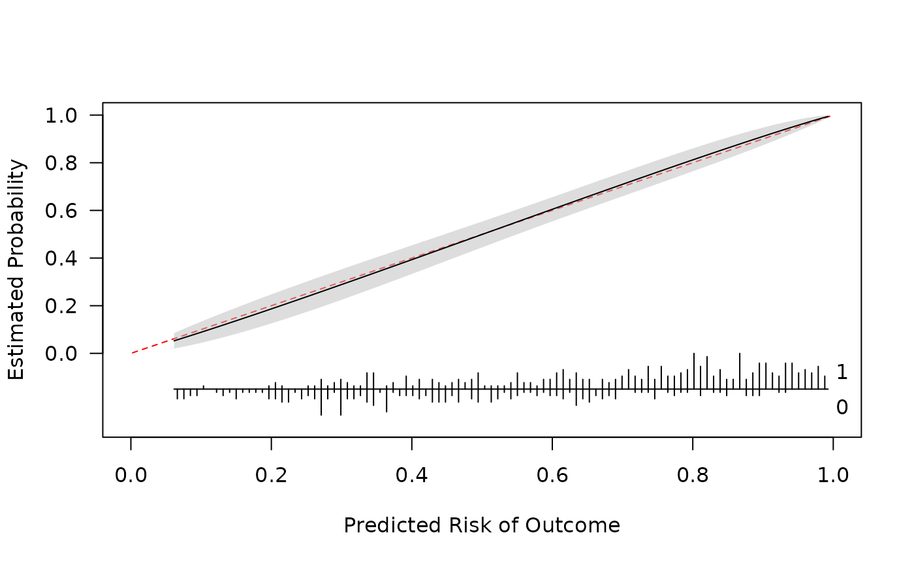

Plot a pmcalibration object. For binary outcomes, also plot the distribution of predicted risks by outcome.
Alternatively you can use get_curve() to get the data required to plot the calibration curve.
Usage
# S3 method for class 'pmcalibration'
plot(
x,
conf_level = 0.95,
riskdist = TRUE,
linecol = "black",
fillcol = "grey",
ideallty = 2,
idealcol = "red",
...
)Arguments
- x
a
pmcalibrationcalibration curve- conf_level
width of the confidence interval (0.95 gives 95% CI). Ignored if call to
pmcalibrationdidn't request confidence intervals- riskdist
add risk distribution plot under calibration curve (TRUE) or not (FALSE)
- linecol
color of the calibration curve line
- fillcol
color of the confidence interval
- ideallty
line type of the ideal unit slope line
- idealcol
color of the ideal unit slope line
- ...
other args for
plot()(currently onlylims andlabs can be specified)
Examples
library(pmcalibration)
# simulate some data with a binary outcome
n <- 500
dat <- sim_dat(N = n, a1 = .5, a3 = .2)
head(dat)
#> x1 x2 y LP
#> 1 -0.9802799 0.0734722 0 -0.4212124
#> 2 -1.4877218 -1.3790974 1 -1.9564765
#> 3 0.1761391 0.3903213 1 1.0802105
#> 4 0.8570410 -0.1267395 1 1.2085773
#> 5 0.0808151 -1.5949875 0 -1.0399522
#> 6 -0.4012543 -1.4866294 1 -1.2685804
# predictions
p <- with(dat, invlogit(.5 + x1 + x2 + x1*x2*.1))
# fit calibration curve
cal <- pmcalibration(y = dat$y, p = p, smooth = "gam", k = 20, ci = "pw", plot = FALSE)
plot(cal, xlab = "Predicted Risk of Outcome") # customize plot
